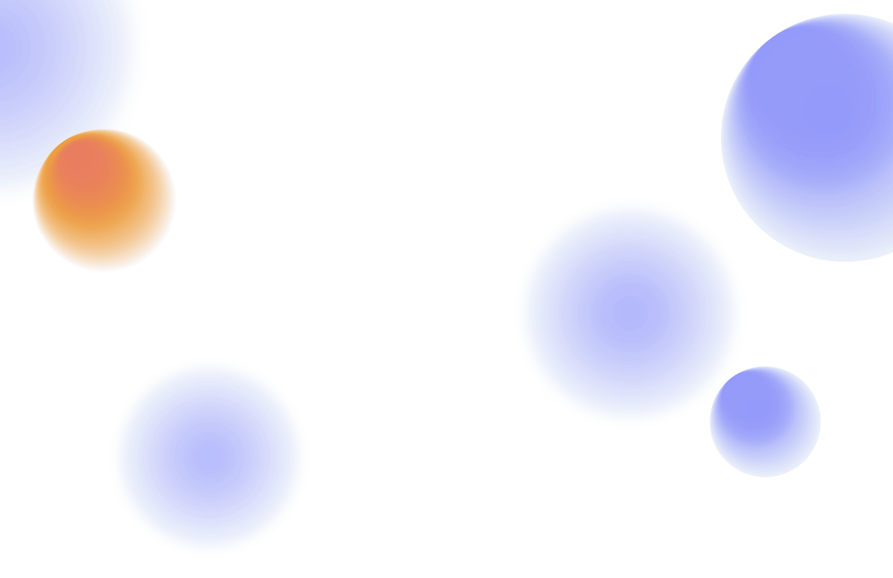
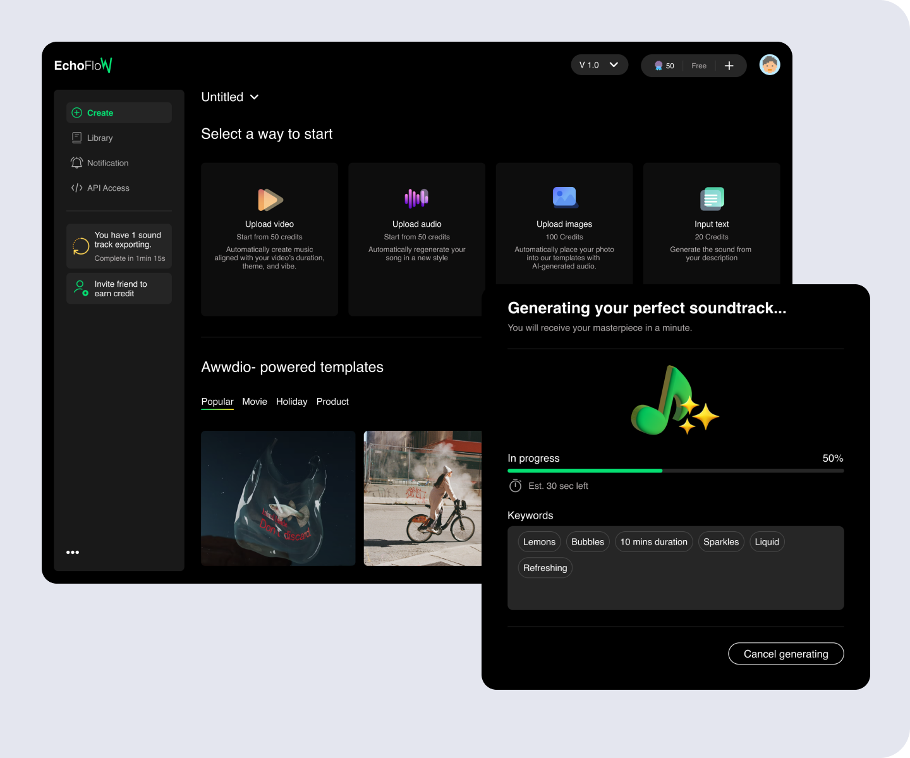
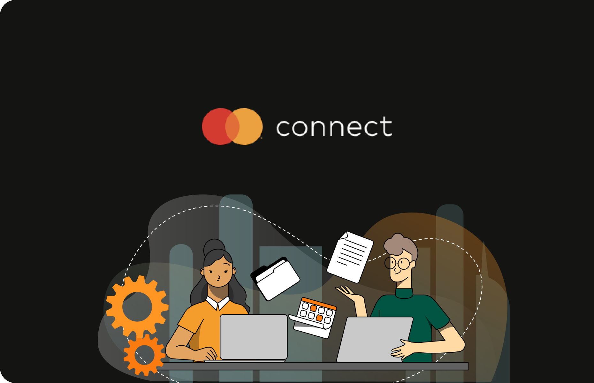

Transforming intricate systems into intuitive,
human-centered experiences.
“A product designer design for clarity at scale. ”
I turn complex, cross-device problems into elegant, shippable experience. My approach blends rigorous data analysis with empathetic visual storytelling to bridge the gap between business goals and human needs.

